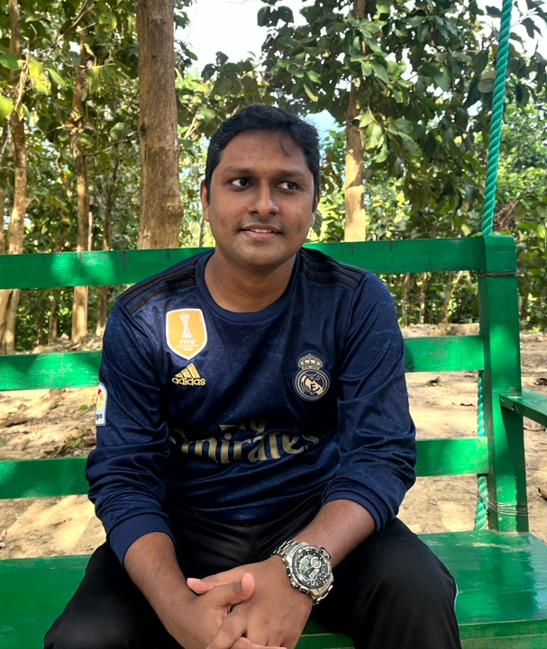

Md. Safiqul Islam Saikat
MSc Student in Computer Science & Engineering
Dhaka International University, Dhaka, Bangladesh
Senior Officer (IT), Janata Bank PLC
Rampura, Dhaka, Bangladesh
Short bio
I am an MSc student in Computer Science and Engineering at Dhaka International University and a Senior Officer (IT) at Janata Bank PLC, with seven years of professional software engineering experience. I completed my BSc in Computer Science and Engineering at Khulna University of Engineering & Technology (KUET) in 2016.
Building large-scale software sparked my interest in intelligent systems with smart, threat-preventive features. I am interested in building secured autonomous systems with artificial intelligence, machine learning and computer vision, along with their applications and explainability. Recent work and projects moved my career from industry applications toward research applications.
Research
Research interests: Artificial Intelligence; Machine Learning; Computer Vision; Autonomous Systems; forensics and security; road safety.
Projects
An iRAP-Inspired Relative Road-Condition Index from Street-Level Imagery and Visual Question Answering (MSc thesis)
A road-safety study that builds an iRAP-inspired relative road-condition index from Mapillary street-level imagery, OpenStreetMap road networks and an iRAP-style visual question answering protocol. Keywords: map matching, composite indicator, AI models, structured questionnaires.
Reinforcement Learning for Bowling Strategies in One Day Internationals
A Deep Q-Network approach to optimizing bowling strategies in One Day International cricket, published at ICCIT 2025.
BEFTN and RTGS at Janata Bank PLC
Bangladesh Electronic Funds Transfer Network and Real-Time Gross Settlement software built with Spring Boot and Oracle 19c. Its API communicates with the core banking software and Bangladesh Bank, and all Janata Bank branches use it.
Online Purchase and Sales Management System (BSc thesis)
An e-commerce site with an admin panel, central inventory management, payment gateway and cash-on-delivery ordering, SMS integration and CanvasJS ratings. Built with Python, Django and MySQL, and deployed on a VPS with Nginx, WSGI and Let's Encrypt.
Earlier academic projects
- Event Management System: Java and MySQL desktop application to create, customize, edit and delete event information.
- File Downloader: PHP and MySQL site where users create an account and download free software.
- Term Result Calculator: Java desktop software that generates term results and printable PDF result sheets.
- Hospital Management: Oracle 10g database tracking doctor and patient appointment schedules.
Code repositories
Publications ↑
See Google Scholar and ResearchGate for the full publication list.
Selected recent papers
Reinforcement Learning for Optimizing Bowling Strategies in One Day Internationals.
Education ↑
- 2025–2026 MSc in Computer Science and Engineering, Dhaka International University, Bangladesh
- 2012–2016 BSc in Computer Science and Engineering, Khulna University of Engineering & Technology, Bangladesh
Professional experience ↑
- 2021–now Senior Officer (IT), Janata Bank PLC. BEFTN and RTGS with Spring Boot and Oracle 19c, secured with Spring Security.
- 2019–2020 Software Engineer, AtomAP Limited. Secure payment APIs and banking wallets in Java Spring, plus IoT projects (car automation, gas alarm, weight alarm).
- 2019 Software Engineer, Pine Solutions Limited. WeeReach, a Python and Laravel API for bulk text and voice SMS notifications to bank customers.
- 2016–2019 Software Engineer, BJIT Limited. Rakuten event management platform (Java, JBPM, AngularJS, MySQL, Redis) and Groovy REST APIs; also an ANC noise-cancellation project in Python and the Reata Android assistant.
Technical skills ↑
- Languages: Java, Python, C++
- Frameworks: Spring Boot, Spring Data JPA, Spring Security, Hibernate
- ML and PyTools: NumPy, Scikit-learn, Keras, Matplotlib, TensorFlow, PyTorch, OSMnx, NetworkX, pandas, pyproj, leuvenmapmatching, Rtree, Folium, requests (Mapillary API), Pillow
- Testing: Spock, JUnit
- Databases: Oracle 19c, MySQL
- Platforms: Linux (Ubuntu), Windows
- IDEs and Others: Eclipse, IntelliJ IDEA, PyCharm, Code::Blocks, Apache Tomcat, Postman, Android
- Collaboration: Git, JIRA, Confluence, Trello
- Networking: CCNA training (KUET), CCNA (R&S)
Certifications ↑
- Advance Training on Oracle Database Management, IBCS-PRIMAX Software (BD) Ltd.
- Cisco Certified Network Associate, Routing and Switching (Cisco ID CSCO12932705)
- Programming for Everybody, University of Michigan (Coursera)
- Python Data Structures, University of Michigan (Coursera)
- Using Python to Access Web Data, University of Michigan (Coursera)